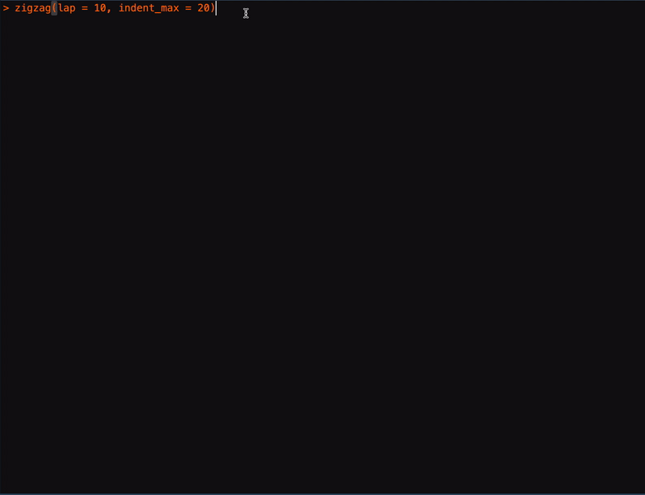
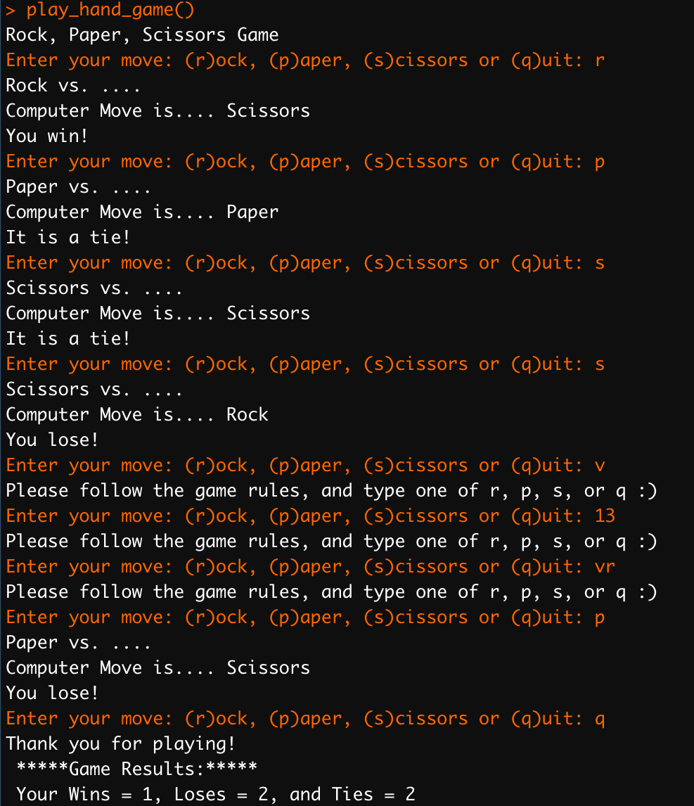

Chapter 6 Functions
We have been using R functions in the default base R package, such as c(), list(), sample(). R provides a lot of useful built-in functions like these, but we can write our own task-specific functions as well. A function is like a mini-program within a program. In this unit, we discuss how to write functions in R.
6.1 A Quick Start
To better understand how a function works, let’s create a simple one. The following code chunk creates a function object, named hello.
hello <- function() {
print("How are you doing?")
}A function object includes several important elements:
- We use the
function()to define a new function object. - After the
function()is the code in the block ({...}), which is the body of the function. - Every function is assigned to a user-defined name (e.g.,
helloin the above example.)
After the function is defined, the code in the body of the function will be executed every time when the function object is called.
hello()[1] "How are you doing?"hello()[1] "How are you doing?"6.2 Why do we need functions?
A major advantage of creating functions in our programs is to group codes that get executed multiple times. Without a function defined, one may need to copy-and-paste same code chunks many times.
Second, with functions, it is easier to update the programs. We often try to avoid duplicating code because if we need to update the code (e.g., to fix a bug in the original code), we don’t have to change the code everywhere we have copied it.
In short, functions can greatly reduce the chances of duplicating code, rendering the programs shorter, easier to read and update.
6.3 Functions with parameters
When we use the built-in R functions like cat(), length(), or matrix(), we can pass them values, called arguments, in the parentheses.
That is, some functions have parameters and users can pass values to each parameter as arguments.
In our self-defined functions, we can also define a function which accepts arguments.
hello <- function(name) {
cat("How are you doing,", name)
}hello(name = "Alvin")How are you doing, AlvinThe new hello() function has a parameter called name. Parameters are variables that expect arguments in the function call. When a function is called with an argument (e.g., Alvin), this argument is stored in the parameter (e.g., name).
More specifically, when the function hello(name = 'Alvin') is called:
- The argument
Alvinis assigned to the parametername; - The program then continues the code block of the function;
- Within the code block, the parameter
nameis automatically set toAlvin.
It is important to note that the value stored in the parameter is forgotten when the function returns. That is, we cannot access the parameter name in the main program:
cat(name)Error in cat(name): object 'name' not foundIn short, the parameters of a function are destroyed after a function call hello(name = 'Alvin') returns.
6.4 Recap of Important Concepts So Far
To utilize a function object, there are several key steps:
- We need to define the function by creating it using
hello <- function(){...}and assigning it with an object name like any other objects in R. - Then we can call the now-created function using
hello(). - The function call will start the execution of the code block in the function by first passing or assigning the arguments/values to the parameters within the function (e.g.,
hello(name = 'Alvin')).- A value being passed to a function in a function call is an argument, (e.g.,
Alvin) - Variables that have arguments assigned to them are parameters, (e.g.,
name =).
- A value being passed to a function in a function call is an argument, (e.g.,
6.5 RETURN Statements
When we define a function, we can specify what the return values should be using the return() statement.
The returned values can be assigned to another object for later use in the program.
In R, there are many built-in functions that return values:
num <- sample(1:10, 3)
num[1] 3 5 8When a function returns nothing, by default the return value of the function is NULL, which is a unique data type in R referring to NoneType.
out <- cat("This is a sentence") # `cat()` has no returnThis is a sentenceoutNULLNow how about the hello() function we created earlier? We didn’t specify the return() statement in the function definition.
out <- hello(name = "John")How are you doing, JohnoutNULLIn the definition of hello(), we did not specify the return() statement; therefore, by default, this function returns NULL. But how come we can still see the outputs of the function?
In the code block of hello() definition, the cat() displays text on the R console only. Therefore, displaying texts in the R console and returning the values are two different things.
Exercise 6.1 Without any change of the function, hello(), how can we assign the values printed in the console by hello() to an object out?
That is, how can you modify the following code chunk so that out can store the values printed by hello(name="Alvin")?
out <- hello(name="Alvin")
outExercise 6.2 Can you try to create a revised version of hello(), which returns the strings so that one can assign the outputs of the hello() to another object name? (Please note that in the following example, the return value out is not a NULL anymore.)
out <- hello2(name = "Alvin")
out[1] "How are you doing, Alvin"hello2(name = "John")[1] "How are you doing, John"6.6 Parameters Order
We’ve seen functions with parameters. When a function has many parameters, there are two alternatives to assign the arguments to the parameters in the function call.
First, we can assign the arguments to the parameters specified in the function call:
set.seed(123)
sample(x = c(1:10), size = 5, replace = FALSE, prob = NULL)[1] 3 10 2 8 6Alternatively, we can assign the arguments to the parameters according to the order of the parameters in th function definition without specifying the parameter names:
set.seed(123)
sample(c(1:10), 5, FALSE, NULL)[1] 3 10 2 8 6In the function definition, we can also assign default values to the parameters. For example, in the documentation of sample(x, size, replace = FALSE, prob = NULL), we can see that the parameters replace= and prob= have default values. That means in the function call we can use these default values as the arguments without specifying them in the call.
sample(c(1:10), 5)[1] 5 4 6 8 16.7 Stacking Functions
A function can also call another function within its code block. If Function A calls Function B in its code block, the execution would return to Function B first, before returning from the original function call.
For example, let’s define two functions, hello() and email(). It is clear to see that within the code block of hello(), we have a function call of email(). That is, the latter is embedded in the former.
hello <- function(name) {
user_email <- email(user = name)
out <- paste0("How are you doing, ", name, ". ", user_email)
return(out)
}
email <- function(user) {
out <- paste0("Your email is: ", tolower(user), "@whatever.org")
return(out)
}When hello() is called, it calls email() first and returns the user’s email address. Once execution returns to the code in hello() that called email(), it returns to the line in hello() that called email(). Then the execution continues to the end of hello().
hello("Alvin")[1] "How are you doing, Alvin. Your email is: alvin@whatever.org"With this embedding structure, we can create effective functions for more sophisticated tasks.
6.8 Local and Global Scope
Now we know in our main program, we can define functions to accomplish specific tasks and these functions can be used multiple times to reduce code duplication.
Variables that are assigned in a called function are said to exist in that function’s local scope. These variables are referred to as local variables.
Variables that are assigned outside all functions are said to exist in the global scope. These variables are referred to as global variables.
A scope is like the life-span of the variable. A local scope is created whenever a function is called. Any variables assigned in the function exist within the function’s local scope. When the function returns, the local scope is destroyed, and these local variables are forgotten (i.e., removed from the memory of the current working environment).
The global scope is created when the main program starts. When the program terminates, the global scope is destroyed, and all the global variables are forgotten.
There are a few important considerations for variable scope:
- Code in the global scope (i.e., outside of all functions) cannot use any local variables (i.e., variables within functions).
- Code in a local scope can access global variables.
- Code in a function’s local scope cannot use variables in any other local scope.
- We can use the same name for different variables if they are in different scopes (e.g., they can be local variables within different functions).
In small programs, using global variables within functions is fine . But it is a bad habit to rely on global variables when your program gets larger and larger.
- The following code chunk shows that local variables cannot be used in the global scope.
customer <- function() {
id = 123
age = 25
nation = "TW"
}
customer()
cat(id)Error in cat(id): argument 1 (type 'closure') cannot be handled by 'cat'- The following code chunk shows that local scopes cannot use variables in other local scopes.
customer <- function() {
id = 123
age = 25
nation = "TW"
print(age)
}
client <- function() {
age = 50
}
customer() # returning `age` from `customer()` not from `client()`[1] 25- The following code chunk shows a local scope can access global variables.
customer <- function() {
age = 25
cat("The customer works at", company)
}
company <- "NTNU"
customer()The customer works at NTNUTechnically, it is OK to use the same variable name for a global variable and local variable in different scopes. But to make your life easier, please avoid doing this.
customer <- function() {
age <- 25
cat(age)
}
client <- function() {
age <- 55
cat(age)
}
age <- 100
customer()25client()55cat(age)1006.9 Exception Handling
A good function handles exceptions properly so that the main program would not be terminated by unexpected errors from the function.
For example, if we create a function myLog(), which takes a number and computes the log value of the number with the specified base.
myLog <- function(x, myBase) {
return(log(x, myBase))
}myLog(100, 10)[1] 2myLog(8, 2)[1] 3There are a few cases where the return values may be problematic:
myLog(10, -1) # base is negativeWarning in log(x, myBase): NaNs produced[1] NaNmyLog(-10, 10) # x is negativeWarning in log(x, myBase): NaNs produced[1] NaNmyLog("100", 10) # x is not numericError in log(x, myBase): non-numeric argument to mathematical functionTo make sure that the function myLog() does not terminate the main program when encountering errors or warnings, it is often a good idea to include exception handling in the function code block.
In R, tryCatch() function can help deal with (both expected or unexpected) errors and warnings. Its structure is as follows:
result = tryCatch({
expr
}, warning = function(w) {
warning-handler-code
}, error = function(e) {
error-handler-code
}, finally = {
cleanup-code
})tryCatch() includes the following important elements:
expr: the expression/code to be evaluated.warning: When theexprcauses a warning, the program execution immediately moves to the code in thewarningcode block.error: When theexprcauses an error, the program execution immediately moves to the code in theerrorcode block.
Now let’s try to include tryCatch() in our code block of the function myLog():
myLog <- function(x, myBase) {
tryCatch({
return(log(x, myBase))
}, warning = function(w) {
if (x < 0)
print("x needs to be a positive number")
if (myBase < 0)
print("myBase needs to be a positive number")
}, error = function(e) {
if (!is.numeric(x) | !is.numeric(myBase))
print("x/myBase needs to be a positive number not a string")
}, finally = {
})
}myLog(10, -1)[1] "myBase needs to be a positive number"myLog("w12", 0)[1] "x/myBase needs to be a positive number not a string"myLog(8, "2")[1] "x/myBase needs to be a positive number not a string"Exercise 6.3 Create a function that produces a simple animation, i.e., the zigzag outputs as shown below. The function will slowly create a back-and-forth zigzag pattern with the laps and the indent size as the parameters of the function. Alternatively, users can stop the animation anytime by pressing CTRL+C.
zigzag(lap = 5, indent_max = 10)
- Please note that the user can interrupt the program/function by pressing CTRL+C and your function should stop properly (using
tryCatch).
Exercise 6.4 Create a simple function to play rock, paper, scissors with the user.
Your program should achieve the following:
- Invite the user to make a move with text inputs (i.e., rock, paper, or scissors).
- The program randomly makes a move.
- The program makes sure that the user can only make legitimate moves.
- The program reports the result of each hand game (i.e., win, lose, or tie)
- The user can continue playing the game until they indicate quitting.
- Upon user’s quitting of the game, the program reports the total results of all the games, in terms of the number of the user’s wins, loses, and ties.
An example of how the function works is provided below.
